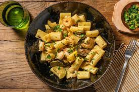

Creamy Prawn Rigatoni
Credit: HelloFresh

Description
Hearty, healthy, delicious and easy. A regular favourite in Casa Matty.
Ingredients
- 200g Fusilli Pasta
- 1 Courgette
- 150g Creme Freiche
- 1/2 Vegetable Stock Pot
- 1 Garlic Clove
- 1 Lemon
- 1 bunch flat leaf Parsley
- 150g King Prawns
- 100ml water (for the sauce)
Method
- Boil your kettle and pour the water into a large saucepan on high heat. Add 0.5 tsp of salt.
When boiling, stir in the rigatoni and cook for 12 mins. Drain in a colander, pop back into the pan,
drizzle with a little oil and stir through to stop it sticking together. Leave to the side.
- Meanwhile, trim the courgette, halve lengthways and slice into 1cm half moons.
Roughly chop the parsley (stalks and all). Zest and halve the lemon. Peel and grate the garlic
- Heat a large frying pan on high heat (no oil) and add the courgette. Cook, until starting to brown,
3-4 mins on each side. Add the garlic and cook, stirring, for 1 min.
- Once the courgettes are browned, reduce the heat and add the creme fraiche, water (see ingredients for amount)
and vegetable stock paste to the pan. Season with salt and pepper. Stir together, bring to a simmer and cook
until the sauce has thickened slightly, 3-4 mins.
- Stir the prawns into the sauce and continue to simmer until the prawns are cooked through, 4-5 mins.
Add a splash of water if the sauce is a bit thick. Meanwhile, mix together the lemon zest and parsley in a small bowl.
- Toss the drained pasta into the sauce. Add a squeeze of lemon juice to taste. Season with salt and pepper to taste, then serve
in bowls topped with the lemon zest and parsley mix. Enjoy!